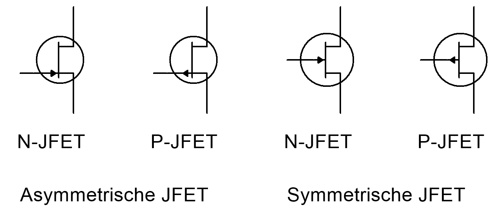
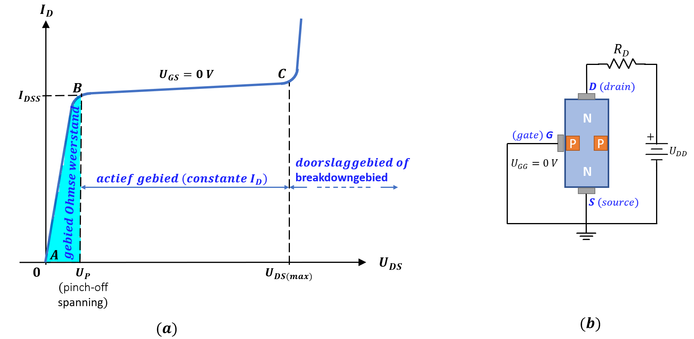

De Veldeffecttransistor of JFET
Field effect transistoren of veldeffectransistoren zijn voor de bipolaire transistoren ontstaan. In 1939 toonden Von Liliefeld en Heil aan dat men de weerstand van een halfgeleidende laag kon wijzigen via een elektrisch veld. In die tijd werd voor de halfgeleidende laag koperoxide gebruikt in plaats van silicium. De eerste bruikbare FET’s werden in 1952 gemaakt door Schockley. Dit is dezelfde persoon die in 1949 aan het hoofd stond van het team dat de transistor fabriceerde. Wegens fabricage- moeilijkheden heeft het nog acht jaar geduurd vooraleer de FET uit zijn labostadium kwam. Vanaf 1960 werd de productie van de FET op grote schaal mogelijk. Momenteel worden naast de bipolaire transistoren steeds meer FET’s toegepast. De reden hiervoor is dat FET’s gemakkelijk te fabriceren zijn, ze weinig plaats nodig hebben op een silicium schijfje en zeer interessante eigenschappen hebben voor zowel lineaire als digitale toepassingen. De voordelen van de FET tegenover de transistor zijn:
De FET heeft een zeer hoge ingangsimpedanie.
In tegenstelling tot de transisitor is de FET is weinig, praktisch ongevoelig, voor radioactieve straling.
De FET genereert weinig ruis. Hierdoor is de FET zeer nuttig als ingangsversterker of als hoogfrequentversterker.
De FET-karakteristieken kunnen relatief weinig afhankelijk van de temperatuur worden gemaakt.
De FET is zeer geschikt voor chopperdoeleinden.
De huidige ontwikkeling van FET’s streeft er naar om het bruikbaar frequentiegebied te verhogen en het afgegeven vermogen op te drijven. Figuur 2-29 geeft een overzicht van de indeling van de FET-familie.
FET
JFET
Verarming (deplation)
N-kanaal
P-kanaal
MOSFET
Verarming (deplation)
D-MOSFET
N-kanaal
P-kanaal
Verrijking (Enhancement)
E-MOSFET
N-kanaal
P-kanaal
Figuur 2-29: indeling van FET’s
De junctie-FET of JFET
Het grote verschil tussen een FET en een transistor is dat een transistor een door stroom gecontroleerde component terwijl een FET spanninggestuurd is. Het is de basisstroom die de collectorstroom stuurt bij een transistor terwijl bij de FET de spanning aan de gate de hoeveelheid stroom door de FET stuurt.
Wat is belangrijk?
Je beschrijft het principieel verschil tussen een FET en een transistor.
Je tekent het symbool van een N-JFET en P-JFET
Je omschrijft het verloop van de uitgangskarakteristiek van een JFET
Je legt uit wat bedoeld wordt met de parameters en .
Je beschrijft de transconductantiecurve van een JFET.
Je tekent en berekent een zelfinstellingsschakeling met JFET.
Je kan de instelling van JFET bepalen via de grafische methode.
Principewerking van de JFET
De junctie FET of JFET is een unipolaire transistor. Deze halfgeleidercomponent heeft enkel meerderheidsladingsdragers nodig om te kunnen werken. De werking van de JFET is veel gemakkelijker te verstaan dan die van de bipolaire transistor.
In figuur 2-30(a) is de opbouw van een -kanaal JFET weergegeven. Deze JFET wordt ingesteld met een - en -spanningsbron. Het onderste gedeelt van de JFET wordt de "Source" (bron) genoemd en het bovenste gedeelte de "Drain" (afvoer).

Figuur 2-30 : principewerking N-kanaal JFET
Vermits in de JFET bestaat uit -materiaal zijn de ladingsdragers vrije electronen. Afhankelijk van de voedingsspanning en de weerstand van het -kanaal, zal er een zekere hoeveelheid stroom vloeien. Door twee -gebieden in het -kanaal aan te brengen, verkrijgen we een JFET zoals in figuur 2-30 te zien is. Elk van deze -gebieden wordt de "gate" (poort) genoemd. Wanneer de fabrikant aan iedere gate een aansluitelectrode verbindt, verkrijgen we een zogenaamde "dual gate JFET". Deze worden vooral in mengschakelingen gebruikt of als verschilversterker. In deze paragraaf beperken we ons enkel tot de JFET met één gate. De twee -gebieden zijn dan inwendig met elkaar verbonden.
Door de gate negatiever te maken dan de source worden de -overgangen van de JFET in sper aangesloten. Het gevolg hiervan is dat er sperlagen ontstaan tussen de twee -materialen en de -laag, zoals weergegeven in figuur 2-30(b). De sperlagen vernauwen het kanaal tussen de twee -lagen waardoor dit kanaal smaller is geworden. De stroom van vrije electronen die vanuit de source naar de drain beweegt, zal bijgevolg verkleinen vermits deze door een smaller kanaal door moet. Hoe negatiever de gatespanning wordt ten opzichte van de source, hoe breder de sperlagen worden en hoe minder stroom er door het -kanaal kan vloeien.
Het grote verschil tussen een JFET en een bipolaire transistor is dat de gate in sper wordt gepolariseerd, terwijl de basis van de transistor in doorlaat wordt gepolariseerd. Dit grote verschil betekent dat de JFET een spanningsgestuurde halfgeleider is. Dus de ingangsspanning
alleen zal de uitgangsstroon controleren.
Het bovengenoemd verschil tussen JFET en bipolaire transistor kunnen we in termen van weerstand uitdrukken. De ingangsweerstand van een JFET is, ideaal gezien, oneindig groot. In werkelijkheid bedraagt deze ingangsweerstand in de megaohms, afhankelijk van het gebruikte JFET-type. Daarom wordt de JFET gebruikt in de toepassingen waar een hoge ingangsweerstánd vereist is. Het nadeel van deze hoge ingangsweerstand is dat de JFET minder gevoelig is aan spanningsvariaties aan de ingang dan de bipolaire transistor. Zo zal bijvoorbeeld praktisch iedere JFET bij een verandering van de ingangsspanning met , een verandering in de uitgangsstroom van minder dan hebben. Terwijl bij de bipolaire transistor deze ingangsverandering van gemakkelijk een verandering van de uitgangsstroon van meer dan 10 mA teweegbrengt.

Figuur 2-31: Symbolen JFET
In figuur 2-31 zijn de schemasymbolen van een JFET weergegeven. De onderzijde van het symbool is de source, de bovenzijde de drain en de linkse aansluiting de gate. De linkse twee symbolen zijn de symbolen voor de asymmetrische JFET (N- en P-JFET) terwijl de twee rechtse de symbolen voor de symmetrische JFET zijn. Het verschil hiertussen is dat bij een asymmetrische JFET drain en source niet onderling verwisselbaar zijn en een symmetrische JFET zodanig is opgebouwd dat ze wel omwisselbaar zijn. Asymmetrische JFET’s komen veel meer voor dan symmetrische JFET’s.
JFET-karakteristieken
JFET-uitgangskarakteristiek
De uitgangskarakteristiek van een -JFET kan opgemeten worden door een bepaalde constante spanning in te stellen tussen gate en source. Deze spanning wordt genoemd. Vervolgens wordt de spanningsbron regelbaar gemaakt om verschillende spanningswaarden tussen drain en source in te stellen in te stellen en vervolgens de drainstroom op te meten.
Voor normale werking van de JFET is de gate in sper aangesloten. Een speciaal geval hierbij is
dat er geen spanning aan de gate is aangesloten waardoor gelijk is aan nul volt. Deze toestand wordt ook de kortgesloten gate-conditie genoemd. Figuur 2-32 geeft de uitgangskarakteristiek weer van een gemeenschappelijke source schakeling (GSS) weer met de gate kortgesloten.

Figuur 2-32 : de uitgangskarakteristiek van een JFET met kortgesloten gate
Hetgeeb direct opvalt, is de grote gelijkenis met de uitgangskarakteristiek van de transistor. De drainstroom stijgt zeer snel in het begin. Daarna blijft de drainstroom ongeveer constant tussen en
. Wanneer de drainspanning te hoog wordt, slaat de JFET door zoals weergegeven op de karakteristiek. Dit is net zo als bij de bipolaire transistoren. Het actieve gebied actieve gebied het praktisch horizontale gedeelte van de '_curve.
In dit gebied gedraagt de JPET zich als een stroosnbron. We kunnen het
gebied van deze werking afbakenen als volgt :